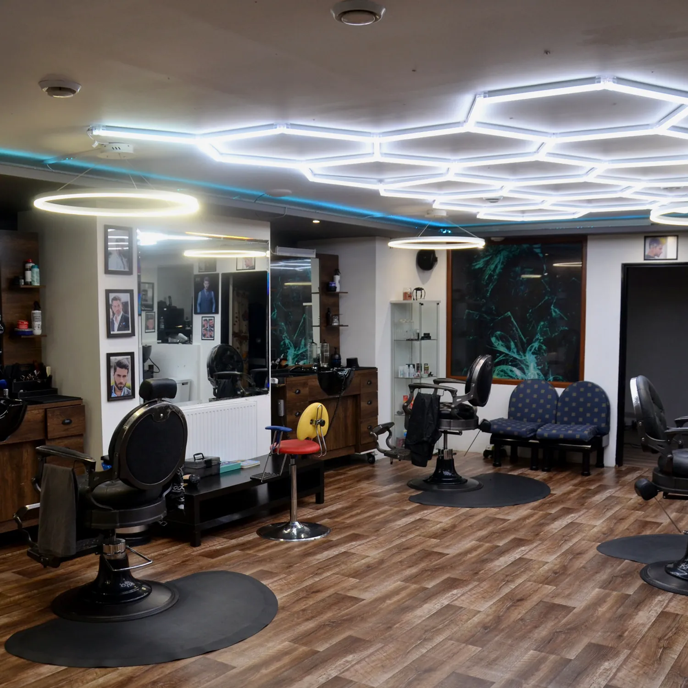

MasDos8
Barber & Tattoo
Nuselská 133/134 · Prague 4
Three crafts under one roof, and one owner who does all three himself. Pick what you came for.
4.8 from 225 reviews
Golden Company 2025
From 09:00 every day